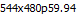
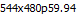

#This routine assume the main gui is alread launch and is currently in Process tab
#This script will select the first channel in mbr and change the resolution
#inputs: resolution=[720x480p59.94...352x480p59.94] applyChanges=0/1
#Usage: mbr_video_resolution.sikuli resolution=[] applyChanges=0
###############################################################
#common code for every sikuli code. Do not remove this section
from me7klib import *
import re
###############################################################
#YOUR code start here
###############################################################
#This is your check for the inputs that you are expecting.
def Check_args():
#checking for required arguments
Check_arg('resolution')
Check_args()
############################################################
#Main program definitions code start from this point
#Any global variables here
#Any definitions are here
def Set_Output_Resolution():
myres = Get_arg('resolution')
if myres:
find(); click(Pattern().targetOffset(0,18)); doubleClick(Pattern().targetOffset(1,16))
if myres == '720x480p59.94': click(Pattern( ).similar(0.80)); wait(Pattern().exact())
elif myres == '704x480p59.94': click(Pattern(
).similar(0.80)); wait(Pattern().exact())
elif myres == '704x480p59.94': click(Pattern( ).similar(0.80)); wait(Pattern().exact())
elif myres == '640x480p59.94': click(Pattern(
).similar(0.80)); wait(Pattern().exact())
elif myres == '640x480p59.94': click(Pattern( ).similar(0.80)); wait(Pattern().exact())
elif myres == '544x480p59.94': click(Pattern().similar(0.80)); wait(Pattern().exact())
elif myres == '528x480p59.94': click(Pattern(
).similar(0.80)); wait(Pattern().exact())
elif myres == '544x480p59.94': click(Pattern().similar(0.80)); wait(Pattern().exact())
elif myres == '528x480p59.94': click(Pattern( ).similar(0.80)); wait(Pattern().exact())
elif myres == '480x480p59.94': click(Pattern(
).similar(0.80)); wait(Pattern().exact())
elif myres == '480x480p59.94': click(Pattern( ).similar(0.80)); wait(Pattern().exact())
elif myres == '352x480p59.94': click(Pattern().similar(0.80)); wait(Pattern().exact())
else: Exit_program('Invalid resolution given: ' + myres, 2)
#######################################################
#Main program flow
Set_Output_Resolution()
).similar(0.80)); wait(Pattern().exact())
elif myres == '352x480p59.94': click(Pattern().similar(0.80)); wait(Pattern().exact())
else: Exit_program('Invalid resolution given: ' + myres, 2)
#######################################################
#Main program flow
Set_Output_Resolution()